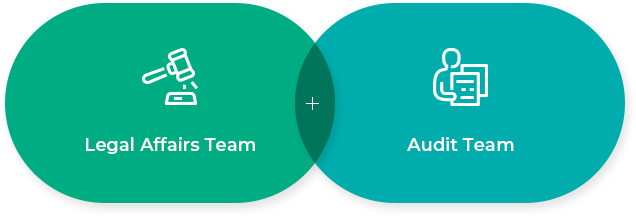
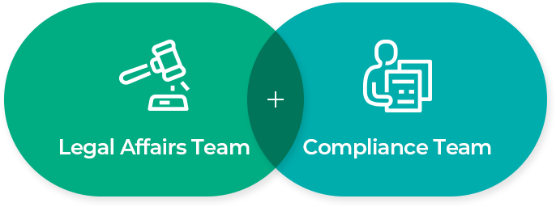

Social Responsibility
Ethics & Compliance Management
Doosan E&C is committed to developing a new future based on
trust and transparent management, in order to keep moving towards our goals.
Code of Ethics
Doosan E&C is committed to realizing its customer-centered management philosophy for
the company’s continuous growth and development, with the aim to enhance
its competitiveness through transparent management and innovations to practice social responsibility.
To this end, Doosan E&C has established a Code of Ethics based on honesty and transparency,
which it applies as a principle for executives and employees in performing their duties.
We also encourage third parties, such as partners, to comply with our Code of Ethics
-
Code of Ethics
·Educational Code of Practice
·Pledge of Ethical Conduct
-
Promotion within the Organization
·Establishment/Revision of the Code of Ethics
·Audits and Operation of a White Paper System
-
Internal Controls
·Compliance with Internal Policies
·Efficient Risk Management
Promotion within the Organization
 
In order for the company’s executives and employees to carry out fair and
transparent corporate activities, the legal affairs team and the compliance team are selected and
operated as the main bodies for the promotion of ethical management.
The legal affairs team establishes and interprets the company’s Code of Ethics and conducts employee education,
while the compliance team conducts employee ethics awareness through self-auditing activities and
the operation of a white paper system operation. We are striving to become a transparent company through continuous self-administration practices.
Internal Control System
In 2006, an Internal Control System was introduced to maintain accurate and reliable financial reporting,
to ensure an effective and efficient business performance, and to comply with the relevant laws, regulations,
and internal policies. The system supports us to continuously strive to achieve our management objectives.